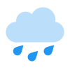
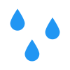

<!doctype html>
<html>
<head>

	<meta charset="UTF-8">
	<meta name=description content="">
	<meta name="viewport" content="width=device-width, initial-scale=1">
	<meta http-equiv="refresh" content="1800" />
	<title>Dashboard</title>

	<style>
	
		@font-face{
			font-family:'digital-clock';
			src: url('digital-font.ttf');
		}

		body {
			background-color: #DDD;
			padding: 0px;
			margin: 2vh;
			font-family: Helvetica;
		}
		
		#grid-container {
			background-color: #DDD;
			display: grid;
			grid-template-columns: repeat(minmax(0, 1fr), 4);
			grid-template-rows: repeat(minmax(0, 1fr), 7);
			grid-auto-columns: 1fr;
			grid-auto-rows: 1fr;
			grid-auto-flow: column;
			grid-gap: 2vh;
			height: 96vh; // 100vh - 2*1vh body margin
		}
		
		.grid-item {
			background-color: #DDD;
			border-radius: 5px;
		}
		
		.item1 {
			grid-column-start: 1;
			grid-column-end: 1;
			grid-row-start: 1;
			grid-row-end: 3;
		}
		
		.item2 {
			grid-column-start: 1;
			grid-column-end: 1;
			grid-row-start: 3;
			grid-row-end: 4;
		}

		.item3 {
			grid-column-start: 1;
			grid-column-end: 1;
			grid-row-start: 4;
			grid-row-end: 8; /* normally 5*/
		}

		.item5 {
			grid-column-start: 1;
			grid-column-end: 1;
			grid-row-start: 5;
			grid-row-end: 8;
		}
	
		.item4 {
			grid-column-start: 2;
			grid-column-end: 5;
			grid-row-start: 1;
			grid-row-end: 8;
		}
		
		#clock {
			text-align: center;
			background-color: #DDD;
			color: #333;
			height: 100%;
			padding-top: 2vh;
		}
		
		#time {
			font-family: digital-clock;
			font-size: 12vh;
		}
		
		#date {
			font-family: Courier;
			font-weight: bold;
			font-size: 3vh;
		}

		#weather-current {
			background: #FFF;
			color: #FFF;
		}

		#weather-temp {
			font-family: Arial;
			font-size: 10vh;
			padding-left: 15px;
			padding-right: 10px;
			float: left;
		}

		#weather-desc {
			width: 50%;
			height: 100%;
			line-height: 11vh;
			padding-left: 1vw;
			font-size: 3vh;
			float: left;
			font-family: Courier;
		}

		#weather-details {
			background: #FFF;
			line-height: 3; /* normally 2 */
			padding: 1vh 1vw;
			font-size: 2vh;
		}

		#weather-details > img {
			height: 4vh;
		}


		#calendar {
			display: none;
			background: #FFF;
		}

		
		iframe {
			width: 100%;
			height: 100%;
		}
		
	</style>
	
	</head>


	<body onload="loadClock(); InitWeatherUpdate();">
		<div id="grid-container">
			<div class="grid-item item1" id="clock">
				<p><span id="time"></span><br><span id="date"></span></p>
			</div>
			<div class="grid-item item2" id="weather-current">
				<div id="weather-temp"></div>
				<div id="weather-desc"></div>
			</div>
			<div class="grid-item item3" id="weather-details">

			</div>
			<div class="grid-item item5" id="calendar"></div>
			<div class="grid-item item4" id="map"></div>
			
		</div>
	
	
		
	<script async>
	
		// Digital Clock
		function loadClock() {
			var today = new Date();
			var h = today.getHours();
			var m = today.getMinutes();
			var s = today.getSeconds();
			h = padZero(h);
			m = padZero(m);
			s = padZero(s);
			document.getElementById('time').innerHTML =
				h + ":" + m + ":" + s
			document.getElementById('date').innerHTML = 
				getDayName(today.getUTCDay()) + "   " + padZero(today.getDate()) + "." + padZero(today.getMonth()) + "." + today.getFullYear() ;
			var t = setTimeout(loadClock, 500);
		}
		
		function padZero(i) {
			if (i < 10) {i = "0" + i};  // add zero in front of numbers < 10
			return i;
		}
		
		function getDayName(index) {
			var weekday=new Array(7);
			weekday[0]="Sonntag";
			weekday[1]="Montag";
			weekday[2]="Dienstag";
			weekday[3]="Mittwoch";
			weekday[4]="Donnerstag";
			weekday[5]="Freitag";
			weekday[6]="Samstag";
			return weekday[index];
		}

		function ISO8601_week_no(dt) {
			// source: https://www.w3resource.com/javascript-exercises/javascript-date-exercise-24.php
			var tdt = new Date(dt.valueOf());
			var dayn = (dt.getDay() + 6) % 7;
			tdt.setDate(tdt.getDate() - dayn + 3);
			var firstThursday = tdt.valueOf();
			tdt.setMonth(0, 1);
			if (tdt.getDay() !== 4) 
			{
			tdt.setMonth(0, 1 + ((4 - tdt.getDay()) + 7) % 7);
			}
			return 1 + Math.ceil((firstThursday - tdt) / 604800000);
		}


		// Weather
		function InitWeatherUpdate() {

			// API: OpenWeatherMap
			apikey_openweathermap = "YOUR_API_KEY"
			url = "https://api.openweathermap.org/data/2.5/onecall?lon=13.404954&lat=52.52000&appid=" + apikey_openweathermap + "&units=metric&lang=de&exclude=minutely"

			// API: AccuWeather (https://developer.accuweather.com/accuweather-forecast-api/apis/get/forecasts/v1/hourly/12hour/%7BlocationKey%7D)
			apikey_accuweather = "YOUR_API_KEY"
			url2 = "https://dataservice.accuweather.com/forecasts/v1/hourly/12hour/LOCATION_KEY?apikey=" + apikey_accuweather + "&language=de-de&metric=true";
			GetWeatherData(url);
		}

		function GetWeatherData (url) {
			var xmlhttp = new XMLHttpRequest();			
			xmlhttp.onreadystatechange = function() {
				//console.log(this.readyState + ", " + this.status);
			   	if (this.readyState == 4 && this.status == 200) {
			        var respArr = JSON.parse(this.responseText);
			        UpdateWeatherWidget(respArr);
			    }
			};
			xmlhttp.open("GET", url, true);
			xmlhttp.send();	
		};

		function UpdateWeatherWidget(arr) {
			var current = document.getElementById("weather-current");
			current.style.background = "linear-gradient(to right, #1034a6, #d3212d)";
			//current.style.background = "linear-gradient(to right, #1034a6, #7d1895, #ae0078, #ca0053, #d3212d)";
			//current.style.background = "linear-gradient(to right, #1034a6, #412f9a, #562c8e, #632982, #6c2977, #7a2672, #86236c, #912166, #a7165e, #ba0c51, #c90f41, #d3212d)";

			var temp = document.getElementById("weather-temp");
			temp.innerHTML = Math.floor(arr["current"]["temp"]) + "°";

			// // Gradient blue to orange
			// switch (true) {
			// 	case (arr["current"]["temp"] < 0): temp.style.color = "#0164c9"; break;
			// 	case (arr["current"]["temp"] < 10): temp.style.color = "#29679a"; break;
			// 	case (arr["current"]["temp"] < 20): temp.style.color = "#6f2852"; break;
			// 	case (arr["current"]["temp"] < 25): temp.style.color = "#ff451c"; break;
			// 	case (arr["current"]["temp"] < 30): temp.style.color = "#f91a1f"; break;
			// 	default: temp.style.color = "#ec0027";
			// }

			// Gradient blue to red
			/*
			switch (true) {
				case (arr["current"]["temp"] < 0): temp.style.color = "#1034A6"; break;
				case (arr["current"]["temp"] < 10): temp.style.color = "#412f88"; break;
				case (arr["current"]["temp"] < 20): temp.style.color = "#722b6a"; break;
				case (arr["current"]["temp"] < 25): temp.style.color = "#a2264b"; break;
				case (arr["current"]["temp"] < 30): temp.style.color = "#d3212d"; break;
				default: temp.style.color = "#d3212d";
			}
			*/

			var desc = document.getElementById("weather-desc");
			desc.innerHTML = arr["current"]["weather"][0]["description"];

			// Weather detail widget
			//var details = document.getElementById("weather-details");
			//details.style.background = temp.style.color;


			/* pull weather image
			baseurl = "http://openweathermap.org/img/wn/";
			var imgdiv = document.getElementById("weather-icon");
			var img = document.createElement("img");
			img.src = baseurl + arr["current"]["weather"][0]["icon"] + ".png";
			imgdiv.appendChild(img);
			*/

			
			var desc = document.getElementById("weather-details");
			desc.innerHTML = "";

			// Regen check
			desc.innerHTML = desc.innerHTML + '     ';

			var propability = 0;
			var flag = false;
			for (hour of arr["hourly"]) {
				if (hour["pop"] >= 10) {
					var date = new Date(hour["dt"]);
					desc.innerHTML = desc.innerHTML + "Regen eventuell ab " + date.getHours() + ":" + padZero(date.getMinutes()) + " Uhr erwartet";
					flag = true;
					break;
				} else if (hour["pop"] >= 51) {
					var date = new Date(hour["dt"]);
					desc.innerHTML = desc.innerHTML + "Regen ab " + date.getHours() + ":" + padZero(date.getMinutes()) + " Uhr erwartet";
					flag = true;
					break;
				}
			}
			if (!flag) {
				desc.innerHTML = desc.innerHTML + "Kein Regen erwartet";
			}

			// Luftfeuchtigkeit
			desc.innerHTML = desc.innerHTML + "<br>";
			desc.innerHTML = desc.innerHTML + '     ';
			desc.innerHTML = desc.innerHTML + arr["current"]["humidity"] + " % Luftfeuchtigkeit";

			// Luftfeuchtigkeit Einstufung in Worten (schwül oder behaglich)
			var h = -0.00625 * arr["current"]["temp"] + 1; // Lineare f basierend auf Grafik https://www.dwd.de/DE/wetter/thema_des_tages/2016/6/23_Bild.jpg?__blob=normal&v=4
			if (arr["current"]["humidity"] < (h*100)) {
				desc.innerHTML = desc.innerHTML + '<span style="font-style: italic;"> (behaglich)</span>';
			} else {
				desc.innerHTML = desc.innerHTML + '<span style="font-style: italic;"> (schwül)</span>';
			}


			// Windgeschwindigkeit
			var windspeed = Math.floor(arr["current"]["wind_speed"]*3.6)
			desc.innerHTML = desc.innerHTML + "<br>";
			desc.innerHTML = desc.innerHTML + '     ';
			desc.innerHTML = desc.innerHTML + windspeed + " km/h Wind";

			// Windgeschwindigkeit: Einstufung in Worten
			var windspeed_descr;
			switch (true) {
				case (windspeed <= 1): windspeed_descr = "Windstille"; break;
				case (windspeed <= 9): windspeed_descr = "leiser Zug"; break;
				case (windspeed <= 19): windspeed_descr = "leichte Brise"; break;
				case (windspeed <= 28): windspeed_descr = "schwache Brise"; break;
				case (windspeed <= 37): windspeed_descr = "mäßige Brise"; break;
				case (windspeed <= 46): windspeed_descr = "frische Brise"; break;
				case (windspeed <= 65): windspeed_descr = "starker Wind"; break;
				case (windspeed <= 74): windspeed_descr = "stürmischer Wind"; break;
				case (windspeed <= 93): windspeed_descr = "Sturm"; break;
				case (windspeed <= 102): windspeed_descr = "schwerer Sturm"; break;
				case (windspeed <= 111): windspeed_descr = "orkanartiger Sturm"; break;
				case (windspeed > 111): windspeed_descr = "Orkan"; break;
			}
			desc.innerHTML = desc.innerHTML + '<span style="font-weight: italic;"> (' + windspeed_descr + ')</span>';


			// Sonnenaufgang
			desc.innerHTML = desc.innerHTML + "<br>";
			desc.innerHTML = desc.innerHTML + '     ';
			var date = new Date(arr["current"]["sunrise"] * 1000);
			desc.innerHTML = desc.innerHTML + "Sonnenaufgang um " + date.getHours() + ":" + padZero(date.getMinutes()) + " Uhr";

			// Sonnenuntergang
			desc.innerHTML = desc.innerHTML + "<br>";
			desc.innerHTML = desc.innerHTML + '     ';
			var date = new Date(arr["current"]["sunset"] * 1000);
			desc.innerHTML = desc.innerHTML + "Sonnenuntergang um " + date.getHours() + ":" + padZero(date.getMinutes()) + " Uhr";

			
		}

		
		// Google Map
		function initMap() {
		  var map = new google.maps.Map(document.getElementById('map'), {
		    // Documentation for below options: https://developers.google.com/maps/documentation/javascript/reference/map#MapOptions.disableDefaultUI
			zoom: 12,
		    center: { lat: 52.52000, lng: 13.404954 }, // Berlin, Germany
			mapTypeId: "roadmap",
			disableDefaultUI: true,
			minZoom: 12,
			maxZoom: 16,
			tilt: 0,
		  });
		
		  var trafficLayer = new google.maps.TrafficLayer();
		  trafficLayer.setMap(map);
		}
	</script>
	
    <script defer
    	src="https://maps.googleapis.com/maps/api/js?key=YOUR_GOOGLE_MAPS_API_KEY&callback=initMap">
    </script>
		
	</body>

</html>